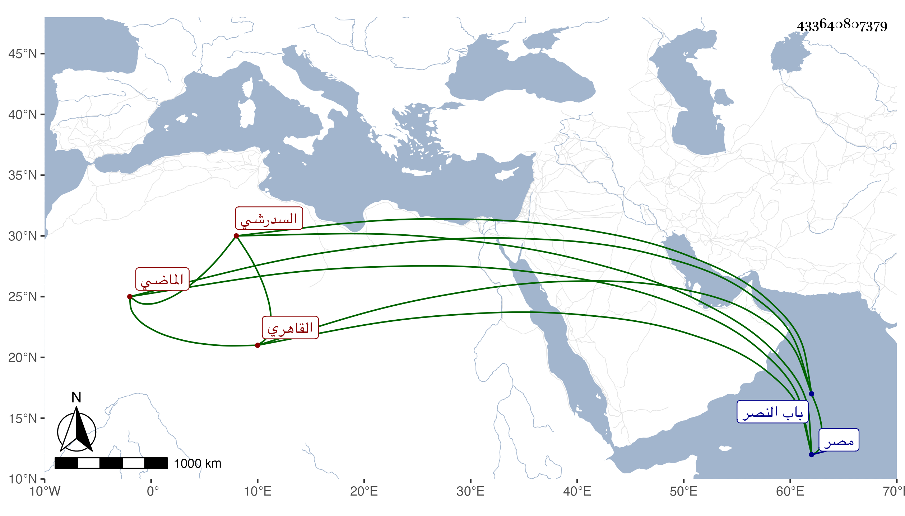

0902Sakhawi.DawLamic.ITO20230111-ara1.EIS1600.433640807379
Biography ID: 433640807379
254
زينب ابنة النور على بن الشهاب أحمد بن أبي بكر بن خلد السدرشي الأصل القاهري الماضي أبوها ويعرف بابن الإمام وأمها سبطة الشيخة خلف الطوخي . تزوجها ابن عمها البدر السعدي الذي صار قاضي الحنابلة بمصر وأستولدها أولادا تأخر منهم بعدها صلاح الدين محمد وفاطمة ، وحجت مع أبيها ومعه موسميا ؛ وماتت تحته في ذي الحجة سنة اثنتين وتسعين عن أزيد من خمسين وكان لها مشهد حافل ودفنت بتربة أبيها بسوق الدريس خارج باب النصر وتأسفنا عليها فقد كانت عاقلة مدبرة متوددة صابرة قانعة عوضها الله الجنة .
